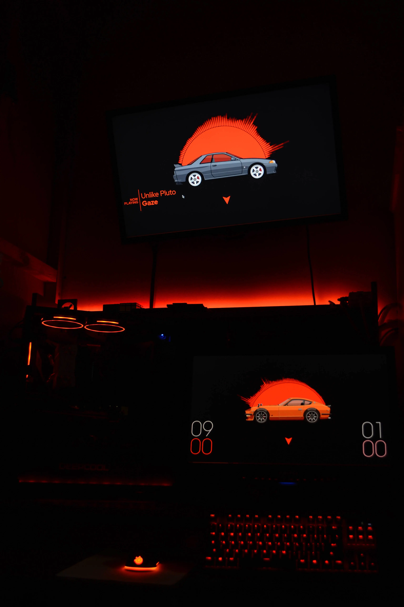
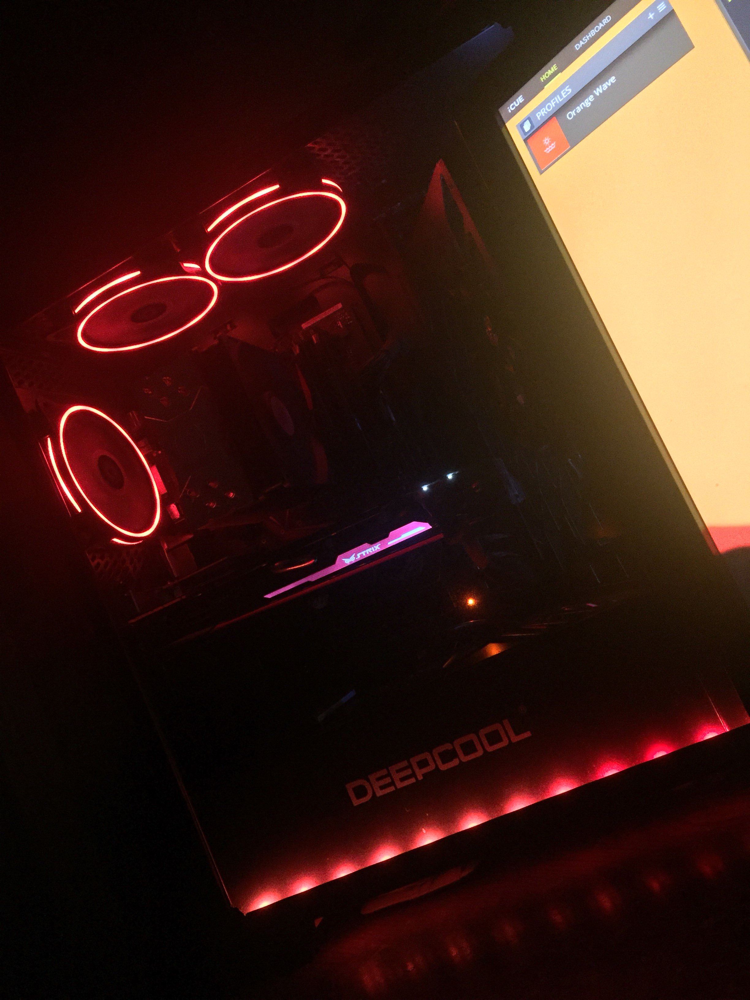

Hello there, I'm Rafee!
A -year old who is generally interested in PCs, cars, programming, photography and listening to music among various other topics (including fluffy plushies!). You can consider me a jack of all trades and a master of none. I love branching out - learning new skills and gathering new knowledge. I currently speak Bengali (native), English, Hindi and am in the process of learning Dutch.
My taste in music is quite broad, you can find me listening to anything from lo-fi, to metal, to dubstep and everything in between, but I primarily listen to Midtempo Bass and Electronic Rock. My favourite artists are Unlike Pluto and Rezz. Check out my Spotify Profile to learn more about my taste in music.
My interest in computers began at a very young age, being put in front of a screen at 3 years of age. I'd play Need for Speed II at the time which started my interest in cars at the same time. I've been fascinated by computers ever since and decided to start really getting to know more about them in 2019, building my first PC near the end of the same year.
My particular interests are RGB and naming schemes... which might be the reason you came here in the first place and making guides for them is the sole reason I made this site.
I'm active on Discord, feel free to add me! @Rafee#4484
Pics of my setup c:


(I like orange)